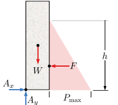

Begin by drawing free-body diagram of the wall, showing the forces acting on it: the weight of the concrete \(W_c\text{,}\) acting at the center of gravity of the rectangular wall, the horizontal force \(F\) due to the mud, and the reaction components at \(A\text{.}\) Define symbol \(D_z\) for the unspecified length of the wall into the page.

The weight of the concrete is found by multiplying the weight density of concrete \(\lambda_c =\rho_c\ g\) by the volume of the rectangular wall.
\begin{align*}
W_c \amp= \lambda_c\ V\\
\amp= (\rho_c\ g)\ (D_x D_y D_z)
\end{align*}
The horizontal force is caused by the hydraulic pressure of the mud on the submerged face of the wall. The pressure is a distributed load that increases linearly from zero at the surface to \(P_\text{max} = \rho_m\ g\ h\) at depth \(h\text{.}\) Since the loading is triangular, the average pressure is one-half the maximum pressure, and the resulting force is:
\begin{align*}
F \amp= P_\text{ave} A = \frac{1}{2} P_\text{max} A\\
\amp = \frac{1}{2}(\rho_m\ g\ h) (h D_z)
\end{align*}
The wall will tip if the counter-clockwise moment due to \(F\) is greater than the clockwise moment caused by the concrete’s weight. By taking moments about point \(A\text{,}\) we can find the maximum allowable height of the mud, \(h\text{.}\) Note that the length of the dam and \(g\) appear on both sides and cancel out.
\begin{align*}
\Sigma M_A \amp= 0\\
(W_c) \left(\frac{D_x}{2}\right) \amp = F \left(\frac{h}{3}\right)\\
(\rho_c\ \cancel{g} D_x D_y \cancel{D_z}) \left(\frac{D_x}{\cancel{2}}\right) \amp = \left(\frac{1}{\cancel{2}}\rho_m\ \cancel{g}\ h^2 \cancel{D_z}\right)\left(\frac{h}{3}\right)\\
h^3 \amp= 3 \frac{\rho_c}{\rho_m} D_x^2 D_y\\
h^3 \amp= 3 \frac{2400}{1760}\!\cancel{\frac{\kgqm{}}{\kgqm{}}} (\m{0.8})^2(\m{3.0})\\
h \amp=\m{1.98}
\end{align*}